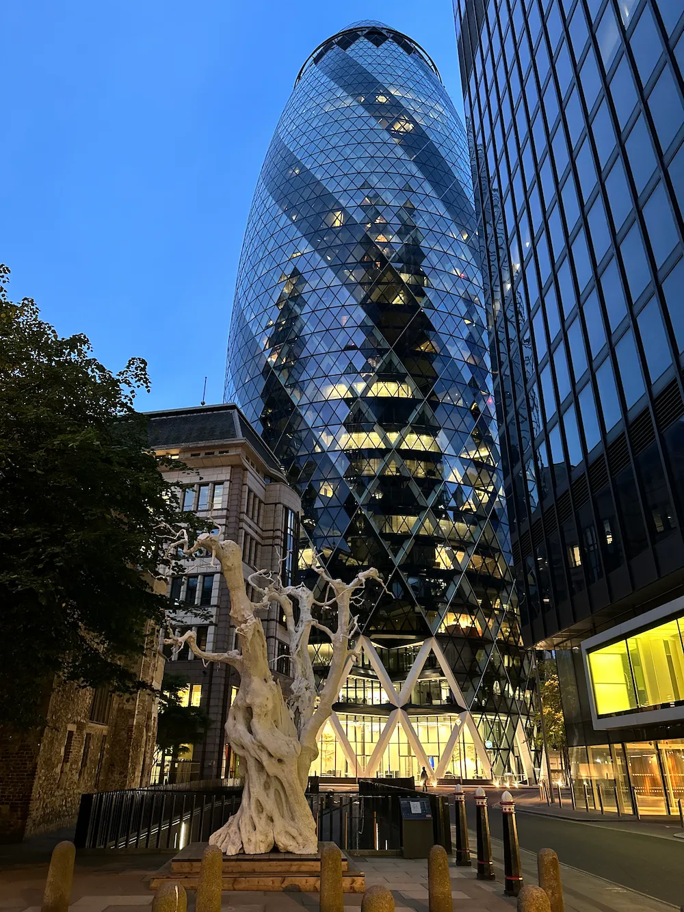

RESEARCH + CONTEXT
Long-form films built around research and historical context.
Beyond short-form content
Long-form films built around research and historical context.
The space to develop larger scripts and explore long-form storytelling.
These films are created during my own trips, with places and everyday experiences becoming part of the story.
Carrying an idea from research through filming and final edit.

London · Winter 2024 · Two-Part Film
Filmed during a winter trip to London, this two-part personal project uses the journey itself as a structure for exploring the city — its neighbourhoods, architecture, history, transport, street culture and everyday life.
Moving from residential neighbourhoods to some of London’s most recognizable districts, the films combine on-location storytelling, historical context and everyday urban experiences to build a broader portrait of the city rather than simply document a trip.
Research. Scripting. Filming. Editing.
Both parts are in Russian. Please enable English subtitles in the YouTube player.
From Gants Hill and Islington to Shoreditch, London Bridge and St Paul’s, the first part follows the route into and through the city, combining neighbourhoods, architecture, transport, public art and historical context.
Watch on YouTube ↗Westminster, Trafalgar Square, Soho, Hyde Park, Buckingham Palace and the City — a more lifestyle-driven second part mixing landmarks and historical facts with theatre, street musicians, food, shops and everyday London experiences.
Watch on YouTube ↗